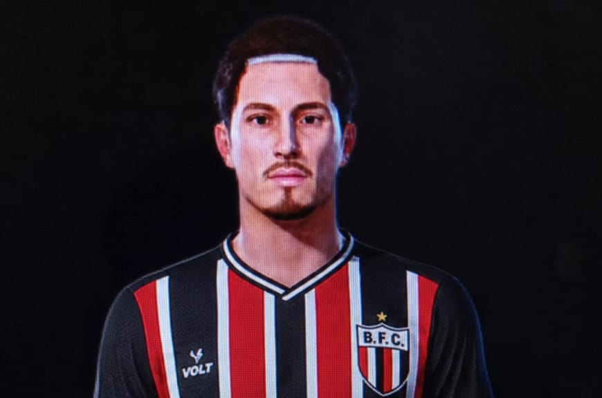

Aos 17 anos, o camisa 8 soma 7 gols em 10 jogos e vive grande fase na Série B.
VER PERFILJogos
Gols
Assistências
Valor de Mercado
Brasileirão Série B
Data a definir
| # | Clube | Pts | J |
|---|---|---|---|
| 1 | Fortaleza | 13 | 5 |
| 2 | Londrina | 12 | 5 |
| 3 | Avaí | 11 | 5 |
| 8 | Botafogo-SP | 8 | 5 |
O camisa 8, de apenas 17 anos, já marcou sete gols em dez partidas e é um dos principais destaques da Série B.